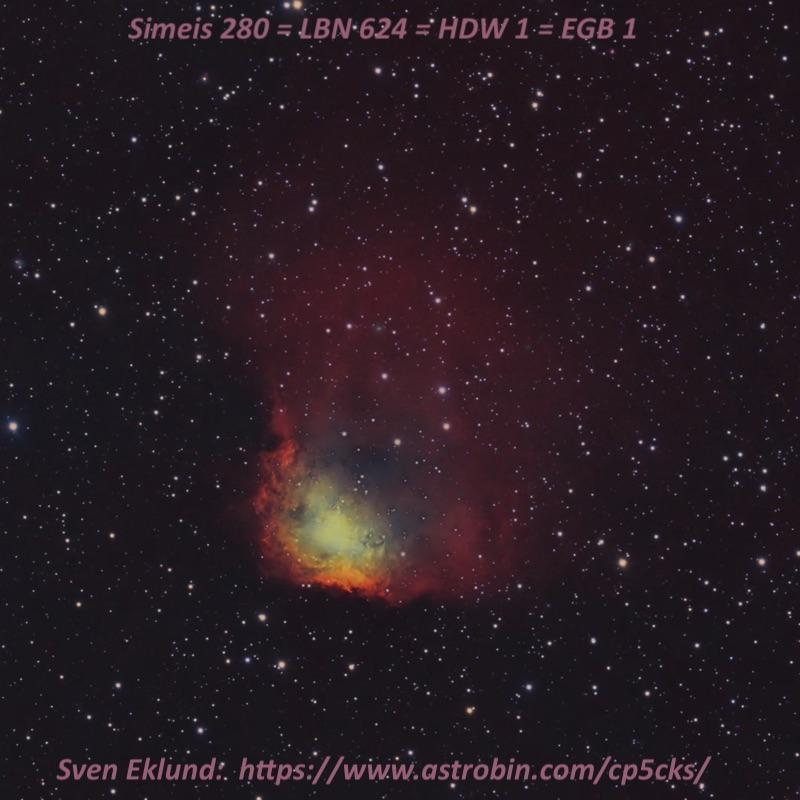

EGB 1 - PN or imposter?
- Name: EGB 1
- Aliases: Simeis 280 = LBN 624 = HDW 1 = HaWe 1 = PK 124+10.1 = PN G124.0+10.7
- Type: Planetary Nebula?
- RA: 01h 07m 07.6s
- Dec: +73° 33' 24"
- Constellation: Cassiopeia
- Diameter: ~5'
- Central star: ~16.6V (APASS)
This rather obscure planetary in Cassiopeia was first cataloged by Gaze and Shajn in their 4th catalog of emission nebulae as Simeis 280. The size is given as 10' x 4', though in their 1955 compilation the size is listed as simply 4'. Most sources, though, mistakenly claim it first appeared in Beverly Lynds' 1965 catalog of bright nebula as LBN 624.
In 1984, Herbert Hartl, Johann Dengel and Ronald Weinberger found it again on a visual search of the POSS and reported it as the first of 13 new PN candidates (HDW 1). Just a year later, Glenn Ellis, Earl Grayson, and Howard Bond (then at Louisiana State University) independently reported it as a new object during another visual inspection of the POSS. They listed it (EGB 1) in table 1 of seven "Definite and Possible Planetary Nebulae" in "A search for faint planetary nebulae on Palomar Sky Survey prints". Then in 1987, Hartl and Weinberger included it in their paper "Planetary nebulae of low surface brightness : gleanings from the 'POSS'", so it is also known as HaWe 1.
The very blue, white dwarf central star is listed at V = 16.6 in APASS. The classification is either type DA (hydrogen-dominated atmosphere) or DAO (hydrogen- and helium-rich white dwarf displaying ionized helium lines). Images show an unusual asymmetric nebula, with a brighter southeastern part with a sharp rim and a very diffuse northern section in H-alpha that increases the diameter up to 10' (as stated by Gaze/Shajn). See the difference here (scroll down the page).

In 2009, Hillwig, Frew, De Marco and Schaub wrote a proposal to use the KPNO Mayall 4-meter to determine the nature of EGB 1 and its central star, which the authors found to be photometrically variable with a period of 0.147 days (suggesting it is perhaps a close binary). Their proposal states, "some studies suggest that EGB 1 may not be a planetary nebula but is instead an interstellar medium (ISM) ionized by the hot WD. We request time-resolved long-slit spectroscopic observations with the KPNO Mayall 4-meter. These observations will allow us to identify the nature of the photometric variability of the central star and provide a more certain classification of the surrounding nebulosity." Unfortunately, I couldn't track down a paper that resulted from this proposal.
But a 2014 paper by Geoffrey Clayton et al: "Dusty disks around central stars of planetary nebulae" states:
"There are two types of mimics: young, hot WDs that lost their PNe some time ago, but are still hot and luminous enough to ionize the ISM, and stars that, by their temperature and gravity, can be placed on post-red giant branch (RGB) evolutionary tracks. If hot enough, these stars can also ionize the ISM and have a nebula that can be mistaken for a PN. An example of the former class is the disk object, EGB 1. Its nebulosity is not a bona fide PN, but is ionized ISM around a young, hot WD; the central star of EGB 1 likely was surrounded by a PN until recently."
Again, a 2015 paper on planetary nebulae distances by David Frew includes EGB 1 in a table of PN mimics with type Ionized ISM. Still, many sources (including the 2001 updated Catalogue of Galactic Planetary Nebulae by Kohoutek, as well as SIMBAD) classify EGB 1 as a true PN. So, which is it?
As far as the first visual observation, I'm a bit surprised that Kent Wallace lists my observation with a 13.1" on September 3, 1986 (northeast of Lick Observatory) as the first known or at least the first reported. Using an OIII filter at 79x, I described it as a "fairly large, extremely to very faint glow, possibly elongated, between two small groups of faint stars, also a faint star is off or at the west edge. Cannot hold steadily with averted vision. Visible continuously in the observatory's 17.5-inch."
I was curious about other objects I recorded that night and here's what I have in my logbook. Three other PNe may be visual firsts.
1) Comet Wilson 1986l, which was discovered in early August. It was fairly compact but bright with a sharp core and a faint extension to the east.
2) PC 24: visible unfiltered at 166x as a mag 13.6-14.0 stellar planetary. Responds fairly well to UHC blinking. Quasi-stellar at 214x, estimated 3" diameter and definitely nonstellar at 332x. Located 9' E of mag 6.6 SAO 88502. First known visual sighting.
3) Pe 1-15: very faint "star" at 166x. Verified by blinking with a UHC filter. First visual sighting with Jack Marling in 17.5" (noted as quasi-stellar).
4) M 2-47: very faint stellar pn at 166x and 214x, estimate V = 14.4-14.8. Responds well to a UHC filter. A mag 12 star lies 1.3' WSW. Located 1.2° east of open cluster NGC 6756. First known visual sighting.
5) Pe 1-16: faint, small disc is visible with averted vision, about 10" diameter, estimate V = 14.5. Nice sight at 214x with UHC filter. Forms an equilateral triangle with mag 8.7 SAO 142622 2.2' ESE and mag 9.5 2.5' SSE. Barnard 105 is a very small dark patch just northeast of SAO 142622,
6) EGB 1
7) 8 galaxies below -40° dec (NGC 7412, 7424, 7462, 7531, IC 5328 at -45.0°, 7744, 7764)
As always,
"Give it a go and let us know!
Good luck and great viewing!"
Steve's follow-up — December 2nd, 2023, 06:45 AM
Oddly, Megastar shows the data source as Str-ESO, which is the abbreviation for the Stausberg-ESO Catalogue of Galactic Planetary Nebulae, and in this catalog it's simply listed as a PN (no mention or references as a SNR).
Steve's follow-up — December 3rd, 2023, 06:02 PM
I posted on CloudyNights a 4-stage sliding-scale model for PN-ISM interaction that was proposed in a 2007 paper by Wareing, Zijlstra ,and O’Brien.
• stage WZO1: the PN expands freely within the bubble of the undisturbed slow AGB wind material and is unaffected by the AGB wind-ISM interaction.
• stage WZO2: the PN interacts with the bow shock formed during the AGB wind-ISM interaction process, and the density and the emission in the upstream side increases accordingly;
• stage WZO3: the geometric center of the PN is moving downstream away from the central star
• stage WZO4: the PN is completely disrupted and the central star is outside the PN.
In a 2012 paper by Ali et al "Interacting planetary nebulae", HDW 1 = EGB 1 is classified as stage WZO3, so approaching the HASH classification. The link here is for the VIZIER page on HDW 1 from their survey.